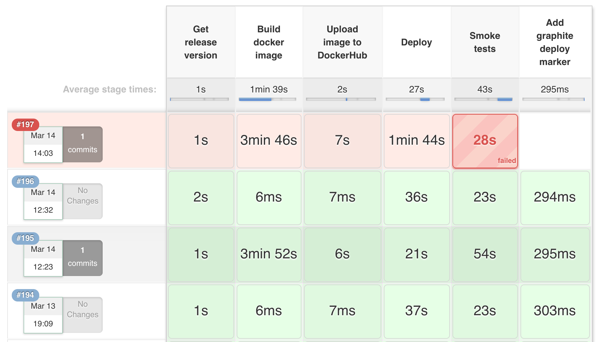

What to expect when you're expecting...to write a Jenkinsfile

It's a bit funny that I wrote my last post about starting to work full time at Venmo before promptly dropping off for over a year and a half. Oops. Well, I had a great time at Venmo but I left a few months ago to join Teachers Pay Teachers, or TpT as we call it, but not before an extremely brief tenure at Apple (I'll save that story for another time).
When I started at TpT we were just starting to migrate applications to a microservice architecture of Kubernetes orchestrated Docker containers (buzzword overload). One of the issues we ran into was how to standardize and automate our container deployment pipeline. At the time, deploys happened through a mix of bash scripts, automatic image builds on DockerHub, manual image builds on laptops, and Kubernetes configuration editing on the command line. It was clear that we needed to unify deployments and create a framework for future microservices.
We were already heavily invested in Jenkins, but I didn't want to manage deployments through freestyle jobs because we couldn't check in changes to revision control and I felt that defining the build via the GUI was error-prone and allowed for too much configuration drift between services. The features that drew me to use Jenkins Pipelines were:
- The ability to version control our job configuration.
- First class support for defining automated deploy pipelines and available documentation on possible deploy workflows.
-
A nice UI for visualizing build stages which allows for:
- Easy monitoring and statistics collection on average stage timing
- Faster debugging of build failures by being able to see exactly where the pipeline failed and finding the relevant console log lines for a single stage

There was just one small detail, in order to get all these benefits the job configuration needed to be defined in a "Jenkinsfile" containing a script written in a custom Jenkins DSL built on top of Groovy. This DSL has a lot of quirks and can difficult to pick up, but after much frustration and trial-and-error I managed to get our pipeline up and running.
Now I want to take you through some issues I faced when writing a Jenkinsfile, discuss some weird bits that I found surprising, show a bunch of code samples for discussing and copy/pasting, and also provide some links to helpful resources. Hopefully this will make it easier for you to get your own Pipeline running and clear up some confusion around Jenkinsfile syntax and usage.
Some tips
It is always tough going back and trying to remember what gave you trouble when you were learning something, but a few points about the Jenkinsfile DSL stuck with me.
-
Dollar signs,
$, need to be escaped in string parameters, except when used for string interpolation.-
I mentioned this first because I used
$below a few times. Here I am usingkubectlto find the current image tag used by a Deployment. Notice that when interpolatingMY_APPthe$does not need to be escaped, but it does need to be in thejsonpathargument and in theawkstatement:node (kubernetes-node) { stage('Find current image tag') { MY_APP = "my-app" RELEASE_VERSION = sh ( script: """ kubectl get deployment ${MY_APP} -o=jsonpath='{\$.spec.template.spec.containers[:1].image}' | awk -F ":" '{print \$2}' """, returnStdout: true ).trim() } }
-
-
Speaking of string interpolation, the syntax is haphazard. There is a helpful gist, but frankly there are no hard and fast rules.
-
The most common case is interpolating a Groovy variable into a string argument:
node { stage('Execute some shell') { MY_VAR = "foo" sh "echo ${MY_VAR}" } }
-
-
You should do almost all of your work within a
nodeblock.- This is discussed in Jenkins' best practices doc, but it bears repeating. If you don't specify a
nodeblock then the step will just execute on your Jenkins master, which is of course bad. -
You can specify a node label as an argument to the
nodestep, for instance:node('docker-node') { stage('Build container image') { ... } }
-
If all of your stages can run on a single node type or you need to run the stages in the same workspace, then just wrap all the stages in a single node block:
node('docker-node') { stage('Run tests') { ... } stage('Build container image') { ... } stage('Upload image to DockerHub') { ... } stage('deploy') { ... } }
-
Maybe you need to run some stages on different node types or maybe one of the stages uses a node type that you only have a few executors for, you can specify a node within a
stageand even mix and match. The following block has four stages, the first can use any node and so no selector argument is provided, the second and third stages can run on the same node type (docker-node) so they are nested in a singlenodeblock, the forth and final stage can only run on a single node type (kubernetes-node) which we can imagine is in short supply so we run just that single stage within thenodeblock:stage('Run tests') { node { ... } } node('docker-node') { stage('Build container image') { ... } stage('Upload image to DockerHub') { ... } } node('kubernetes-node') { stage('deploy') { ... } }
- This is discussed in Jenkins' best practices doc, but it bears repeating. If you don't specify a
-
You can run shell commands fairly easily with a
shstep but only if the exit code is0. Any other exit code will fail the build and terminate early.-
I'm particularly annoyed by this quirk as I found it to be very unintuitive. If you need to just execute a command and don't care about the exit code you can work around this by running your command in a subshell (by wrapping it in parentheses) and always returning
0:node { stage('Execute some shell') { sh "(exit 1) || true" } }
-
If you do want the exit code, you can use this hack to write to a file in the workspace and read from it later:
node { stage('Execute some shell') { sh "(./script_that_might_return_bad_exit_code; echo \$? > exit_code_file) || true" real_exit_code = readFile('exit_code_file').trim() } }
-
-
You cannot run multiple
stagesteps inside of aparallelblock.-
In my case building a container image and running unit tests are the slowest part of my pipeline. I wanted to write something like this (which doesn't work):
parallel ( 'tests': { stage('Run unit tests') { node { ... } } }, 'build': { stage('Build container image') { node { ... } }, } )
-
Nope, you can't do that. Instead you have to just stick that parallel step in the single stage, even if the parallel steps you want to do are logically separate. This is mostly an organizational and UI issue, but unfortunate nonetheless. Here is what is allowed:
stage('Build image and run tests') { parallel ( 'tests': { node { ... } }, 'build': { node { ... } } ) }
-
-
You can't define a "post-build" step to execute on job failures like you can with a freestyle job.
-
The suggested solution is to wrap everything in a
try...catch. It isn't great or pretty, but it is what is there.node { stage('Execute some shell') { try { ... }catch (e) { sh './post_build_failure_script' throw e } } }
-
I actually wrote a function to make this a little nicer looking, in my case I wanted to send a slack notification if a
stagefailed for any reason but I still wanted the build to fail:void with_slack_failure_notifier(Closure task) { try { task() }catch (e) { slack_notification('danger', 'Build has failed! Check the build url below.') throw e } } node { stage('Execute some shell') { with_slack_failure_notifier { ... } } }
-
-
Not really a tip, here is the
slack_notificationfunction from above. It might be useful on it's own.void slack_notification(status, message, title = 'Build-and-Deploy', title_link = "${env.JOB_URL}") { sh ( script: """ curl -0 -X POST "${SLACK_WEBHOOK_URL}" \ -H "Expect:" \ -H 'Content-Type: text/json; charset=utf-8' \ -d @- << EOF { "attachments": [ { "color": "${status}", "title": "${title}", "title_link": "${title_link}", "text": "${message}\\nBuild: ${env.BUILD_URL}" } ] } EOF """ ) }
Some concerns
I ran into this Reddit rant a few days ago where the poster is going off about all the shortcomings of Jenkinsfiles. It's a little funny, a little entitled, and entirely accurate. Just so you don't feel you are alone when your job fails for the nth time, here are my own biggest frustrations:
-
A serious lack of documentation.
- It is clear that the Jenkinsfile DSL has enormous power, but there simply isn't enough material published by the maintainers on how to use different features.
- Features that users would obviously want are not discussed or mentioned, "How can I run a command if a stage fails and my build is going to terminate?" (you can't).
-
The existing documentation is often unclear or incomplete with the primary issue being a near total lack of examples in the docs, "How do I actually provide parameters to a
buildstep?" (like this):build ( job: 'My-Build', parameters: [ [$class: 'StringParameterValue', name: 'MY_PARAM', value: "MY_PARAM_VALUE"] ] )
-
Code examples are few and far between.
- I don't think this is really anyone's fault. I suspect most Jenkinsfiles are kept in private source control and it isn't popular enough to have much material written about it.
- No way to test your code aside from actually running it in a job.
- You can't test, execute, or validate Jenkinsfiles locally. So the only option is to stub values and run the code blocks in a test Pipeline job by pasting the snippet into the script block instead of pulling from a remote repo.
- I did find one source that showed how to validate your code by sending it to your Jenkins master via the command line, but I couldn't get it to work for me. Perhaps you will have more luck?
Some resources
It is tricky finding the most useful bits that Jenkins provides, some of the most helpful are:
- The Pipeline docs, for a high level overview
- The pipeline-examples repo, especially the best practices section
- The "steps" reference is the most complete description of available step options and parameters
There are very few available code examples, I found the most helpful to be:
- Wilson Mar's blog post
- This random repo of examples, although most of the Jenkinsfiles are very specific and maybe not useful to everyone
- A compilation of string weirdness examples, I mentioned this above as well
Final thoughts
I hope all that didn't scare you off! I still think writing Jenkinsfiles is worth the trouble in order to get access to Pipelines. And as weird as writing scripted Groovy is, I honestly think Jenkinsfiles are an improvement over the previous Jenkins workflow of writing bash scripts pasted inside of code blocks in the GUI. It isn't perfect, but it is an improvement. I'm looking forward to the documentation and tooling around Pipelines to improve in the near future, but I've been able to be very productive with Pipelines despite the limitations of the current toolset.
I'm planning to write again soon, or at least sooner than the last gap :), and I might go over:
- specifics around designing a Docker + Kubernetes deploy pipeline
- thoughts on and introduction to Elixir
- something else...